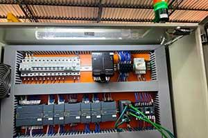
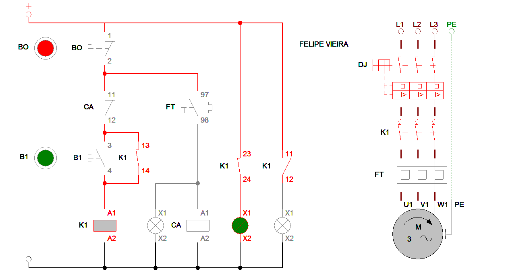
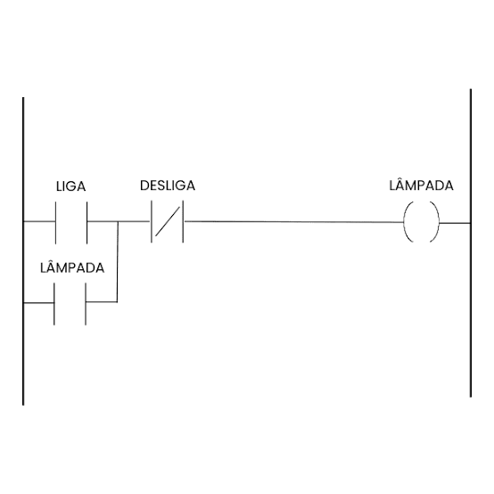

Introdução à Automação Industrial & Comandos Elétricos
A medição de grandezas físicas, o controle de motores e a lógica de programação são os pilares centrais da automação industrial moderna. Para que processos fabris funcionem com estabilidade, segurança e eficiência, diversos componentes e softwares trabalham em conjunto.
Visão Geral da Bancada de Automação

Neste portal de estudos, você encontrará um guia completo que vai desde os princípios físicos da elétrica até a simulação virtual e programação industrial no ambiente Siemens TIA Portal.
O que você vai aprender neste portal:
- Dispositivos de Proteção: Disjuntores (residenciais e industriais), Disjuntores-Motores e Relés Térmicos. Elementos fundamentais para proteger equipamentos e condutores contra sobrecargas e curtos-circuitos.
- Manobra, Comando e Controle: Contatores de potência e auxiliares, Botoeiras de pulso, Chaves seletoras e Relés Temporizadores para automação por tempo.
- Motores, Sensores e Instrumentação: Funcionamento detalhado do Motor de Indução Trifásico, Sensores de Fim de Curso, padronização de cores de sensores industriais e uso do Multímetro para diagnósticos.
- Laboratório Digital e Simulação: Bancadas interativas de teste e diagramas elétricos dinâmicos com comportamento em tempo real baseados no CADe SIMU.
-
Controlador Lógico Programável (CLP):
- Conceitos (plcCon): Arquitetura interna, ciclo de varredura (Scan), organização de memória (Bit, Byte, Word) e módulos de E/S digitais/analógicas.
- Programação (plcProg): Linguagem Ladder e o passo a passo para desenvolvimento de projetos no software TIA Portal (Siemens).


Do Circuito Físico ao Software
Seja para projetar uma partida de motor com reversão, diagnosticar falhas com multímetro ou estruturar a lógica de uma linha de produção automatizada por CLP, o domínio dessas ferramentas é a base para o profissional da indústria 4.0. Navegue pelos botões do menu superior para iniciar os estudos.